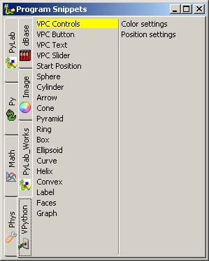
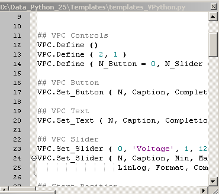
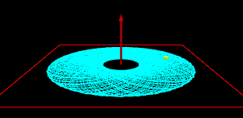
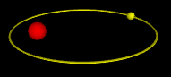
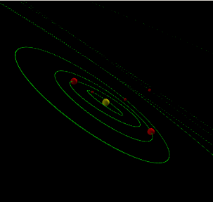
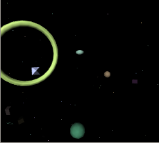
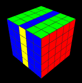
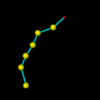
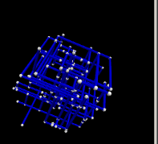

VPython Collection  ( january 2009 )
( january 2009 )
Application Designer / Domain Expert / Control Designer / Core Developer
|
Introduction This is a PyLab_Works example application, that manages a large set of VPython scripts. All python scripts in a fixed directory are assumed to be VPython scripts. A selected Vpython script can be run and edited. The whole "code" to build this application with PyLab_Works is shown on the right, and the resulting program can be seen below this table. Some explanation: The VPython window is the dock window where the scene of Vpython will be projected. The Code Editor will contain the selected VPython script, and is build around a full blown Scintilla editor. The CMD Shell Doc is a multi tab control, that contains
The VP Controls, is a dynamically generated set of controls, that is created by and can interact with the VPython script. |
Normally the program will run VPython-5, but you can force VPython-3 with the commandline switch -VP3 |
Code Snippets
The Code Editor is equiped with a easy to use and easy to modify code snippet manager which can be invoked by F7. Of course the code snippet manager uses the same Scintilla editor.
|
 |
 |
Dynamic Controls
In the code you can define what controls you need. At this moment only Button,Text and Slider are available, and Text is not fulley working as planned.
All calls should be made to a virtual instance "VPC", as shown above in the code snippets. "Completion" is the method that should be called by the control after it's value has changed.
For a logarithmic slider you should set LinLog = 'Log'

Examples
This program contains a dynamically controlled set of VPython-3 examples. You can add more files to the collection, just be copying them to the appropriate VPython3 directory. If you want to occur the file in a specific group, add a prefix to the filename, indicating the group. e.g. to add a VPython3 program named "moonlanding.py" to a group "Astro", just rename the file to "Astro_moonlanding.py", because the first part of the filename before the first underscore is used to identify the group.
Almost all VPython demos included here are found on the web. Where possible I've noted the author, the creation date and the website where I found it. If anyone discovers creations of her his own, let me know, and I'll add your name.
Most of the scripts were modified, either to fulfill the PyLab_works conditions or to show the effect of the dynamical PyLab_Works controls.
Changes General
In this paragraph, the changes made to each program are described. If you want to make the changes in such a way that outside PyLab_Wors the program runs unmodified, you can use the constant PW_Embed, which is available when running the module inside PyLab_Works:
In general the following rules yields for VPython files to behave well in PyLab Works:
Not allowed (means forbidden)
Preferred
Not necessary
Astro group
|
Binary_Stars ( by E. Velasco. November 2004 ) This program visualizes the orbits of two stars (Binary stars). We use scaled variables. If alpha = G*m1*m2, a = major semiaxis of the ellipse of m2 around m1, and e = excentricity of that ellipse, we rescale the distance r between the stars and the time by: r->r/a, t->t*sqrt(alpha/mu*a^3), where mu is the reduced mass. The equations of motion for the relative position of m2 with respect to m1 are, in the rescaled variables are: r_dot_dot = -1/r^2+(1-e^2)/r^3 and phi_dot = sqrt(1-e^2)/r^2 with initial conditions: r = 1-e, r_dot = 0, phi = 0. With the rescaled variables the period of the orbit is 2*pi. The program uses a very rudimentary midpoint solver for the # equations of motion, but good enough for this demo. It only computes one cycle and then repeats it, to avoid drift. Change the value of e and the masses to get different orbits, with e = 0 to get the circle. |
|
Inv_Force ( by E. Velasco, October 2004 ) This program visualizes the orbit of a particle of mass m in an atractive central force field = -alpha/r. The initial conditions are given by r=r0, r_dot=0 (i.e r0 is a turning point in r) and phi=0 phi_dot=k/r0*sqrt(alpha/m). The dimensionless parameter k adjusts the value of the angular momentum (k=1 corresponds to a circular orbit). We now rescale variables to a new r =r/r0 (so the starting point is now r=1) and rescale the time to a new time t=t*r0*sqrt(m/alpha), so phi_dot = k. The equations of motion in these new variables are: r_dot_dot = -1/r+k^2/r^3 and phi_dot = k/r^2 with initial conditions: r=1, r_dot=0, phi_dot=0. The program uses a very rudimentary midpoint solver for the equations of motion, but good enough for this demo. Change the value of k to get different orbits (k=1-> circle). ** To clear the orbit left-click the mouse ** |
 |
|
Keppler ( by Peter Borcherds, University of Birmingham, England ) ( Kepler's Laws.py ) Plots the orbit of a planet in an eccentric orbit to illustrate the sweeping out of equal areas in equal times, with sun at focus. The eccentricity of the orbit is random and determined by the initial velocity program uses normalised units (G =1) This demo also shows how you can very easy and effectively use wxPython controls. |
|
Mercury_Orbit ( by Andrew Williams, 2002, website ) Demonstration of tidal locking in Mercury's orbit. There are three complete rotations of the planet for every two orbits of the sun. Hopelessly out of proper scale, of course, it's meant to illustrate the motion |
|
Nebula ( originally by Chabay and Sherwood, adapted by Lensyl Urbano January 2006, website ) from the above website: "This is a model of the gravitational collapse of a number of particles in space. Particles start with semi-randomly assigned initial positions and masses and their motion is governed by their initial velocity and Newtonian attraction. When particles collide they coalesce and eventually, a central star forms while a few planets remain in orbit. Because the final orbits do not lie on a single plane this model can be used to explain both the advantages and limitations of numerical modeling." |
|
Orbit ( by ?? ) Nice to add a vector with the magnitude of the speed / force. |
 |
|
Orbit2 ( by ?? ) Nice to add a vector with the magnitude of the speed / force. |
|
Satellite ( by ?? ) This satellite crashes after a while on the earth. It would be nice to draw the trail. In VPython-5 the earth crash, also causes a VPython-5 crash. |
|
Solar_System ( by Lensyl Urbano, Jan. 2006, website ) Simple solar system model showing the orbits of the planets. In this version the orbits are not tilted so the longitude of the ascending node is not correct. It would be nice to give the planets more "natural" colors. Also buttons, to switch between an overview of inner and outer planets would be nice. At this moment the orbits are not drawn, because it takes to much time, must be improved. |
 |
|
VSpace ( by Ron Adam, March 2005, website ) A space voyaging demo. By moving the mouse you can determine the direction in which you'll travel. Runs very slow in VPython-5 |
 |
EM group
|
EM Wave ( by Rob Salgado, march 2004, website ) ( EMWave.py ) illustrates the relationships among electric and magnetic fields in electromagnetic radiation (plane wave). |
|
FranckHertz ( by Aaron J. Miller ) One of the first experiments, that indicated that the exited states of atoms are quantized. From Hyperphysics:
It would be nice to extend the example with a current meter, which also makes a plot of the current versus the exitation voltage. |
|
Moving Magnet ( by Ruth Chabay, 2007-08-07, Revised Bruce Sherwood 2007-11-10 ) Faraday's Law: bar magnet moves at constant velocity, then briefly comes to rest and reverses # Choose whether to show a ring or a disk through which passes magnetic flux # Choose whether to show B at many places, not just in flux region # Magenta arrow represents the vector dB_vec/dt |
|
Potential Grid ( probably by Bruce Sherwood ) Shows the electrical field of dipole. |
|
Toroid Drag ( probably by Bruce Sherwood ) Click to show the magnetic field interactively, by holding the left-mousekey down, you can drag the start location. After you release the mouse the arrow is fixed. |
Game group
|
Hanoi ( by Ruth Chabay, carnegie mellon university, 2000-06 ) Towers of Hanoi: rings may be dragged through stuff - a little surreal |
|
Pool1 ( ?? ) |
|
Rubik1 ( ?? ) Still don't understand when a click really results in a move. |
|
Rubik_555 ( ?? ) Still don't understand when a click really results in a move. |
 |
|
Rubik_Small, Rubik2,3,4 are not implemented, although the controls works well, they are not closed when the script closes. Either the controls must be taken over or the controls windows must be made invisible on closure. |
Mechanics group
|
AA_Bounce Thé bouncing ball demo. |
|
Bounce2 Bouncing ball in a box. In VPython-5 it would be nice to make the walls opaque, so you can rotate the cube. |
|
Crystal ( ?? ) |
|
Crystal2 (by Bruce Sherwood; revised by Jonathan Brandmeyer ) |
|
Gyro1 ( by E. Velasco. December 2004 ) Demo of a symmetric (I1=I2) gyroscope. It uses numerical integration with a primitive mid point solver of Euler's equations using the Euler angles [phi,theta,psi] as variables. Left mouse toggles the display of the trail of the orbit of the tip of the gyroscope. Right mouse toggles the display of the vectors L and omega (angular momentum and velocity). |
|
|
Gyro2 ( by E. Velasco, December 2004 ) Demo of the free motion of a symmetric top in the reference frame of the center of mass (fixed at the origin). Left-click the mouse to toggle the curve of the tip of the x1 moving axis. Right-click to toggle display of the angular momentum and angular velocity. |
|
Molecule ( ?? ) |
|
Monkey ( John W. Keck, February 2003 ) The classic Shoot-the-Monkey Demo. |
Pendulum group
|
Double (by Eduardo Sánchez Velasco. September 2005, website ) Shows a double pendulum, in which the tracing of the end joint can be toggled. |
|
Double2 ( ?? ) The analysis is in terms of Lagrangian mechanics. The Lagrangian variables are angle of upper bar, angle of lower bar, measured from the vertical. |
|
Lorenz ( ?? ) Lorenz differential equation |
|
Multi_Pendulum ( ?? ) |
 |
|
ODE ( by Miles Jacobs, , website ) ( visualjoints.py ) uses pyODE (http://pyode.sourceforge.net), an open-source physics engine |
|
Spherical (by Eduardo Sánchez Velasco. September 2004, website ) Shows a spherical pendulum, a trace is following the end-joint, which can be cleared by clicking on the VPython window. |
|
Physics group
Free_Path (14_spark_mean_free_path.py, Bruce Sherwood Fall 2000, website)
watch one atom move through a gas
|
Birds ( by Eric Nilsen, September 2003, website ) boids.py generates bird flocking behavior Ideas for version 2.0: predators obstructions perching on the ground for a bit prevailing wind random flock scattering cone boid shape --> change boid axis to indicate direction |
|
Brownian 2D ( by E. Velasco. July 2006 version ) Simple demo to illustrate the motion of a Big brownian particle in a swarm of small particles in 2D motion. The spheres collide elastically with themselves and with the walls of the box. The masses of the spheres are proportional to their radius**3 (as in 3D). Clicking the left mouse button toggles the display of the orbit of the Big brownian sphere. |
|
Brownian 3D ( by Bruce Sherwood Fall 2000 ) A model of an ideal gas with hard-sphere collisions. One atom is tracked; its mean-free path is determined more by the size of the container than by the gas density. Ideas: - change number of atoms - change temperature - clear trail |
|
Drape ( ?? ) Very Nice !! |
|
StripChart ( by Flavio Codeco Coelho, License: GPL ) I think there are are much better widgets for stripchart recording, but to complete the overview of the possibilities of VPython, it's here. |
Scene group
|
Alfabet ( by Bruce Sherwood, December 2007, website ) ( look_around.py ) shows how to rotate a camera at the origin and look around at a surrounding scene. This demo show how you can rotate the ring with characters, by left moues position. At the center, no movement, the further you move the mouse to the right the faster the ring will rotate. Changed: allow user.spin |
|
Cherry_Tree ( by Viktor Ferenczi, januari 2003, website ) Very Beautiful ! It would be interesting to change the program in such a way, that after a while the cherries would really drop on the ground. |
|
Chess (by Shaun Press, website ) Chess board -- doesn't actually play but will execute moves: move ( 'd2d4' ) |
|
Clock ( by Viktor Ferenczi, januari 2003, website ) problems when coming from another "clk" not known ?? |
|
Face ( by Joel Kahn, 2004, website ) Makes an amusing moving face. |
|
Fountain ( ?? ) Very fast for so many balls ! |
|
Intensive Care ( by Stef Mientki, november 2008 ) This demo was used to evaluate the positioning and dimensions of lifting arm systems for medical equipment in an Intensive Care unit. |
|
Material 5 ( by ?? ) VP-5 Click to center one of the balls, and move your mouse around, because attached to your mouse there's a little light. |
|
Mandelbrot1 ( by Bruce Sherwood, jan 2008, website ) (pixelplot.py) shows a way to do pixel-oriented plotting in VPython |
|
Pipes ( by William Wright, ?, website ) A screen-saver-like animation of connecting pipes |
 |
|
Planar ( ?? ) Move the cylinders around. |
|
Saraiva ( by Eduardo Saraiva, ?, website ) is a fun and attractive demonstration of various VPython capabilities. |
|
Stonehenge ( by Bruce Sherwood ) On the left the new VPython-5 version. Press to enter roaming mode, release to exit roaming mode. In roaming mode, with the mouse button down, move the mouse above or below the guide crosshairs to move forward or backward; right or left rotates your direction. I don't understand how to toggle roaming mode and what it does exactly.. |
|
The VPython-5 demo ( by Bruce Sherwood, August 2006 ) Beautiful light \ shade \ transparency |
Shape group
|
Capitals ( by Joel Kahn, 2004, website ) ( capital_letters.py ) displays capital letters using curves |
|
Cone ( by David Scherer July 2001 ) Example of use of faces object for building arbitrary shapes (here, a cone) |
|
Cone_Arrow ( by Aaron Miller, v0.1: 18Jul2008 ) VPython carrow, Make a cylindrical-bodied arrow with a cone point of identical dimensions as the standard built-in square arrow. |
|
Cones ( by Thom Ives, July 2002 ) modified by Bruce Sherwood and David Sherer |
|
Convex ( by David Sherer ) The red Cone follows the mouse position. |
|
CrossProduct ( ?? ) Vector cross product: Red x Green = Yellow Drag to change green vector Click to toggle fixed angle or fixed length |
|
Frame_Test (by Stef Mientki, november 2008 ) Just a testscript, to see how translations and rotations of frames are performed. |
|
Labels ( ?? ) You should see a single arrow with three labels attached to it. Each label is translucent. The one at the tip should be centered at the tip. The head and tail labels have a single line of text. The midpoint label has two. |
|
Lathe ( by David Scherer ) Create a surface of revolution out of slices that are convex objects |
|
Random ( ?? ) looks like space garbage to me. |
|
RandomBox ( ?? ) this is mostly for experimenting with zooming and rotating |
|
Shape-V5 ( by David Scherer, July 2001 ) VP-5? Demonstrates some techniques for working with "faces", and shows how to build a height field (a common feature request) with it. |
|
|
Spider ( ?? ) readdata.py This program is meant to be a simple example of how to read data from a file. It reads a plain ASCII text file containing three columns of numbers separated by spaces and treats the numbers in each line as a three dimensional (x,y,z) coordinate for a point on a weird knotlike 3D figure. |
|
Text ( by Bruce Sherwood, Carnegie Mellon University, begun March 2000 ) Display extruded text (uppercase only at present). By default, display text along x axis, with letters pointing up parallel to y axis. |
Unused Demos
Changes individual programs
Pendulum group
Double
Chess ( Author: Shaun Press )
Keppler ( Peter Borcherds, University of Birmingham, England )
Scene group
Clock ( Viktor Ferenczi, januari 2003, website )
Mandelbrot1 ( by Bruce Sherwood, jan 2008, website )
(pixelplot.py) shows a way to do pixel-oriented plotting in VPython
problems with from __future__ import division
VP5 - VP3


{kind=link}
{kind=link}